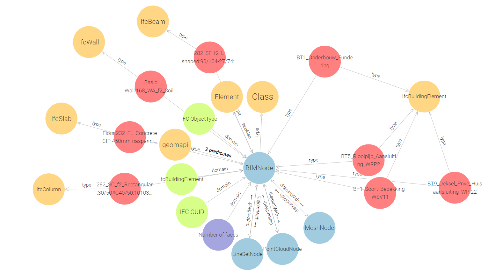

geomapi.nodes.bimnode
BIMNode is a Python Class to govern the data and metadata of BIM data. This node builds upon the [Open3D](https://www.open3d.org/) and [ifcopenshell](https://ifcopenshell.org/) API for the BIM definitions. Be sure to check the properties defined in those abstract classes to initialise the Node.
This Node is an extension of the MeshNode so it inherits all mesh-based transformation and visualization functionality.
IMPORTANT: The current BIMNode class is designed from a geospatial perspective to use in geometric analyses. As such, it’s geometry is defined by Open3D.geometry.TriangleMesh objects and contains only a skeleton set of IFC Information. Users should use this class to conduct their analyses and then combine it with the existing IFC files or IFCOWL RDF variants to integrate the results.
- class geomapi.nodes.bimnode.BIMNode(subject: URIRef | None = None, graph: Graph | None = None, graphPath: Path | None = None, name: str | None = None, path: Path | None = None, timestamp: str | None = None, resource=None, cartesianTransform: ndarray | None = None, orientedBoundingBox: open3d.geometry.OrientedBoundingBox | None = None, convexHull: open3d.geometry.TriangleMesh | None = None, loadResource: bool = False, ifcPath: Path = None, globalId: str = None, className: str = None, objectType: str = None, **kwargs)
Bases:
MeshNode- __init__(subject: URIRef | None = None, graph: Graph | None = None, graphPath: Path | None = None, name: str | None = None, path: Path | None = None, timestamp: str | None = None, resource=None, cartesianTransform: ndarray | None = None, orientedBoundingBox: open3d.geometry.OrientedBoundingBox | None = None, convexHull: open3d.geometry.TriangleMesh | None = None, loadResource: bool = False, ifcPath: Path = None, globalId: str = None, className: str = None, objectType: str = None, **kwargs)
Creates a BIMNode. Overloaded function.
This Node can be initialised from one or more of the inputs below. By default, no data is imported in the Node to speed up processing. If you also want the data, call node.get_resource() or set getResource() to True.
Warning: never attach an IfcElement to a node directly as this is very unstable!
- Args:
subject (RDFlib URIRef) : subject to be used as the main identifier in the RDF Graph
graph (RDFlib Graph) : Graph with a single subject (if multiple subjects are present, only the first will be used to initialise the Node)
graphPath (Path) : Graph file path with a single subject (if multiple subjects are present, only the first will be used to initialise the Node)
path (Path) : Path to mesh .obj or .ply file (data is not automatically loaded)
resource (o3d.geometry.TriangleMesh, ifcopenshell.entity_instance) : Open3D Triangle mesh data from trimesh, open3d or ifcopenshell.
ifcPath (str|Path) : path to IFC file
globalId (str) : IFC globalId
className (str) : IFC className e.g. IfcWall, IfcBeam, IfcSlab, etc.
objectType (str) : IFC object type e.g. i.e. Floor:232_FL_Concrete CIP 400mm
getResource (bool, optional= False) : If True, the node will search for its physical resource on drive
- Returns:
BIMNode : A BIMNode with metadata
- property ifcPath
The path (Path) of the ifc file.
- property globalId
The GlobalId (str) of the node that originates from an ifc file.
- property className
The IFC className (str) of the node that originates from an ifc file.
Note: This must be a IFC formatted class name e.g. IfcWall, IfcBeam, IfcSlab, etc.
- property objectType
The IFC objectType (str) of the node that originates from an ifc file.
Note: In most software, this is the family or type name of the object, which contains information of the material composition i.e. Floor:232_FL_Concrete CIP 400mm
- property resource
The resource (mesh, image, etc.) of the node. If no resource is present, you can use get_resource(), to load the resource from a path or search it through the name and graphpath.
- Inputs:
self.path
self.name
self.graphPath